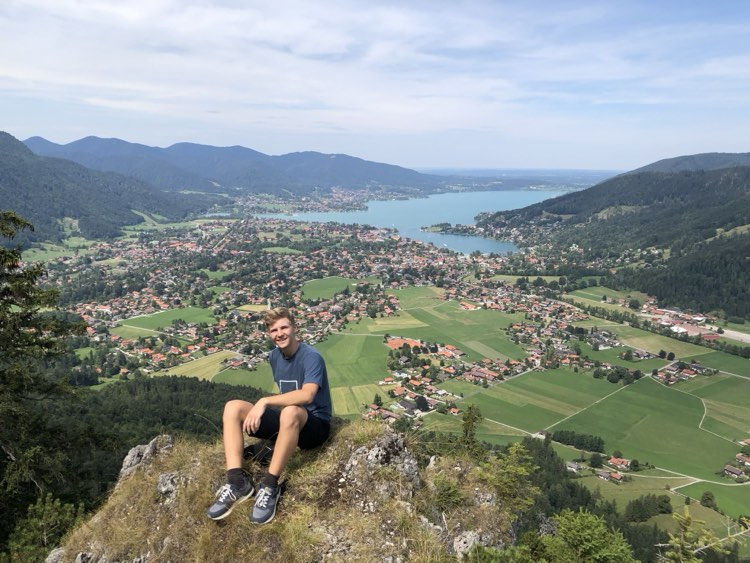
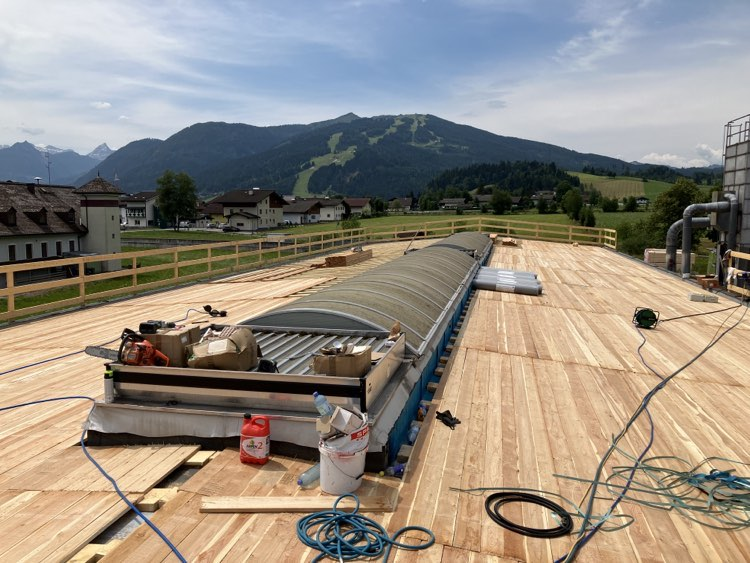

Niečo o mne

Celý tento príbeh začal asi pred dvoma rokmi, keď som sa zobudil do reality a uvedomil si, že by som mal nájsť nejaký koníček. Predsa len kopanie hrobov na záhrade nie je vec ktorou by ste sa chceli pochváliť a k tomu všetkému už tam nebolo ani miesto. Našťastie som mal už od malička pozitívny vzťah k drevu, a tak mi napadlo, že si vytvorím dielňu a začnem niečo vyrábať. Znie to ako pekná predstava, však? A práve takto vznikla moja malá dielňa.
S tými pár drobnými, čo som mal v peňaženke, som si kúpil nejaké základné vybavenie pre dielňu a pustil som sa do roboty. Najlepšie sa mi robilo s kombináciou dreva a epoxidu, pretože som nepotreboval veľa strojov, a výsledok bol aj esteticky príjemný. Ale neznamená to, že som si nerobil aj jednoduchý nábytok 😄. Avšak s obmedzeným množstvom strojov výsledné produkty nie vždy dosiahli svoj vrchol, a tak som si povedal, že musím niečo vymyslieť.


Môj najlepší kamarát mi ukázal, že je možné ísť pracovať do zahraničia a slušne si zarobiť. Dokonca som ho navštívil a pochopil som, že toto bude cesta, ktorou pôjdem, aj keď som ešte nevedel úplne presne ako. Strach som mal z mnohých vecí. Byť tam sám? Nerozumieť ľuďom? Pracovať pre niekoho iného? Ako sa vôbec tam dostanem? Ukázalo sa, že najťažšia otázka ešte nebola ani položená.
V marci tohto roku sa v tejto hlave zrodil plán.
- Nájdem si prácu v zahraničí
- Zarobím peniaze
- Kúpim vybavenie do dielne
- A spustím výrobu
Avšak najzložitejšou otázkou bolo, ako si nájdem prácu. Začal som koncom marca a ozvali sa mi až posledný týždeň pred prázdninami, v čase, kedy som to už skoro vzdal. Vzali ma medzi strechárov. Pracovať s drevom? V zahraničí? Ubytovanie poskytnuté? To bolo presne to, čo som hľadal.


Ibaže to bolo v Rakúsku a hovorili tam dialektom, takže som im nerozumel. Zistil som, že sa pohybovať na stavbe bez toho, aby ste rozumeli, čo sa deje, je celkom náročné, ale ako vidíte, zvládol som to 😂. Keď som mal čas, robil som si výskum o strojoch, ktoré budem potrebovať.
Po návrate na Slovensko som objednal potrebné veci a už som len užíval zvyšok prázdnin. Keď prišli, a ja som zistil, ako ich zložiť, bol druhý bod plánu za mnou. A tak sa teraz ocitávam s úlohou v oblasti informatiky ohľadom vytvorenia vlastnej webovej stránky. To mi vlastne celkom vyhovuje, pretože bez nej by som sa predsa len nezaobišiel.